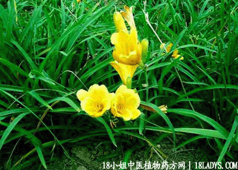

(本文解释权归中药材天地网兄弟站-18小姐中医植物药方网所有,如需转载请注明出处)

古籍名：萱草根（《本草衍义》）
别名：金针菜根、萱草根、玉葱花根。
植物名：萱草。
生长环境：本品为多年生草本，为观赏植物，常栽培于庭院内。
分布：欧洲南部至日本。广州常见。
入药部分：根。
采集期：全年采根。
自采地点：家种。
性味：性寒，味甘淡。
功能：利水通淋。
主治、用量和用法：1、肝胃火盛：干用5钱至1两，猪瘦肉适量，清水煎服；2、牙痛；用法同上；3、痰火盛：用法同上；4、衄血；干根5钱至1两，猪瘦肉适量，清水煎服；5、白浊、沙淋：干用1至2两，猪瘦肉适量，清水煎服。
验方1：（治内伤咳血方）金针头2两，兔狗尾2两，清水煎服，煎成一碗半服。
（方解）《本草衍义》论萱草根曰：大热衄血，研汁大杯，和生姜汁半杯，细呷之，可见骨人已经验用止血。民间用此药治吐血，配兔狗尾清肝肺热。凡肝肺热而引起之出血者，用之有效。
（方歌）内伤吐血不须愁，兔狗尾续金针头，二物同煎清水服，金清木泻肝能柔。
验方2：（治衄血方）金针头5钱、茅根花5钱、清水三碗，煎成一碗服，或加蜜枣同煎。
（方解）金针头，茅根花具有止血剂，各家《本草》著还早已详载。用治衄血，经验甚效。金针头即萱草根、花即助膳之金针菜。
（方歌）：衄血由来内热加，金针头合白茅花，蜜枣两枚痛煎服，止血功能效不差。
(本文解释权归中药材天地网兄弟站-18小姐中医植物药方网所有,如需转载请注明出处)